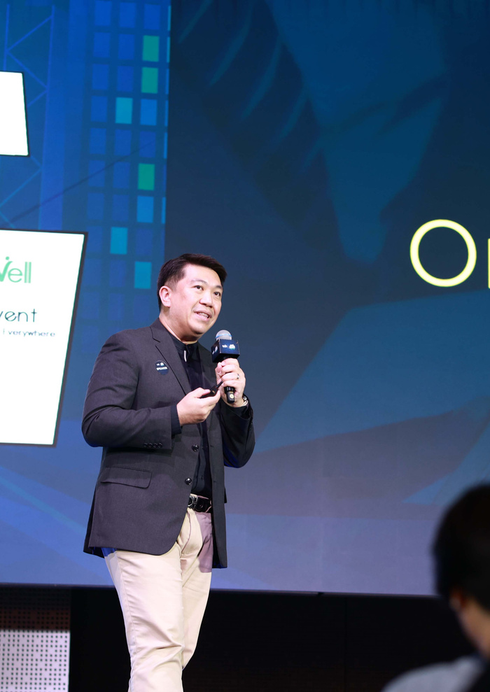
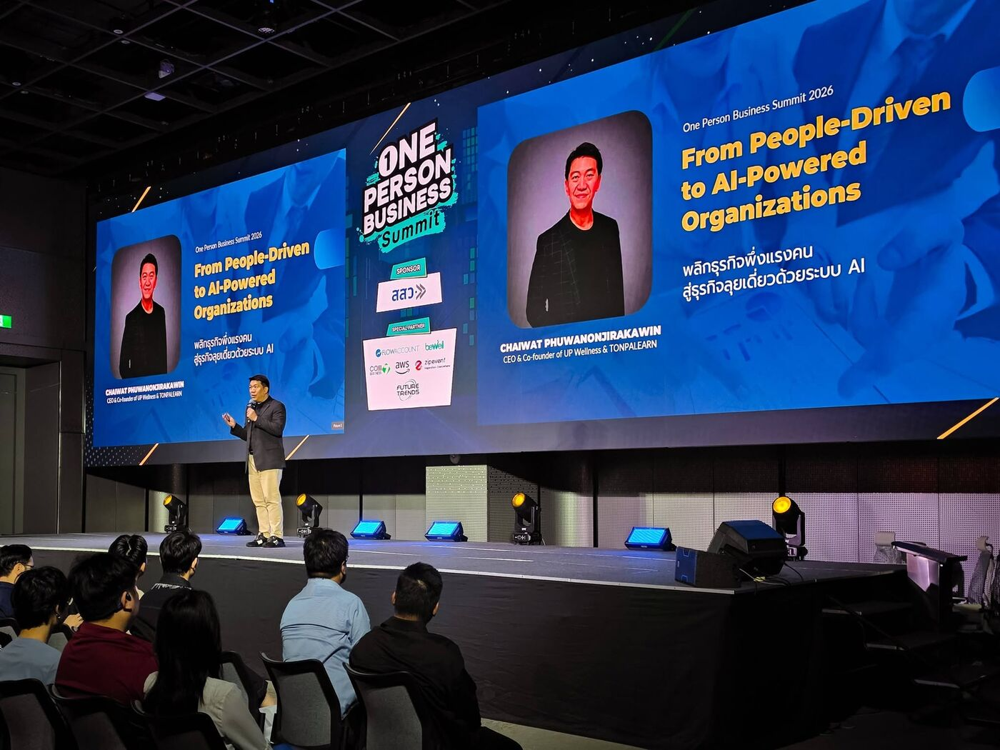

องค์กรไม่ได้ใช้ AI แบบเดียว — ผู้บริหารต้องตัดสินใจ ว่าจะเอา AI ไปวางตรงไหน · พนักงานต้องใช้ให้ได้จริงทุกวัน โดยไม่ทำข้อมูลรั่ว · ทีม IT ต้องสร้างและคุมระบบเองได้ การสอนแบบเดียวทั้งองค์กรจึงไม่ตอบโจทย์ใคร
ข้อเสนอนี้ออกแบบเป็น 4 หลักสูตรแยกตามบทบาท โดยทุกกลุ่มเริ่มจากฐานความเข้าใจเดียวกันก่อน แล้วจึงแยกไปตามความลึกที่แต่ละบทบาทต้องใช้จริง
จุดต่างของข้อเสนอนี้คือผูกเนื้อหาเข้ากับ 2 บริบทจริงของ AUTOCORP — แนวทางการ Deploy AI ในองค์กร (4 โหมด) และ NetSuite ที่องค์กรใช้อยู่ ผู้เรียนจึงไม่ได้เรียน AI ลอย ๆ แต่เห็นเลยว่าเอาไปวางตรงไหนในระบบงานของตัวเอง
กรอบอ้างอิงที่ใช้ตลอดหลักสูตร — ทุกกลุ่มต้องรู้ว่างานที่ตัวเองทำอยู่ในโหมดไหน เพราะแต่ละโหมดมีระดับการควบคุมและความเสี่ยงต่างกัน
- พนักงานสมัครและใช้งาน AI ด้วยตนเอง
- ตัวอย่าง: ChatGPT, Gemini, Claude, Perplexity
- เหมาะกับ: brainstorming, เขียนงาน, แปลภาษา, research ทั่วไป
- ใช้ได้เฉพาะข้อมูล Public / Non-sensitive
- เสี่ยง: Data leakage, Shadow AI
- บริษัทจัดซื้อ อนุมัติ และกำหนดให้ใช้งาน
- ตัวอย่าง: Gemini for Workspace, Microsoft Copilot, ChatGPT Enterprise
- เพิ่ม productivity ในงานเอกสาร ประชุม และวิเคราะห์ข้อมูลทั่วไป
- องค์กรควบคุมได้ผ่าน SSO, Admin, DLP, Audit Log
- เสี่ยง: Vendor risk, privacy, data governance
- AI Agents บน Private Cloud / ระบบที่บริษัทกำหนด
- เชื่อม RAG, Knowledge Base, API, Workflow, MCP
- ทำได้มากกว่า Generate — Reason, Retrieve, Recommend, Execute
- ต้องมี RBAC, Least Privilege, Human Approval, Audit Trail
- เสี่ยง: Tool abuse, excessive autonomy, system access
- AI Feature ที่ฝังอยู่ในระบบธุรกิจ เช่น ERP
- ตัวอย่าง: NetSuite AI / system-native AI features
- ใช้ข้อมูลในระบบธุรกิจโดยตรง — การเงิน สินค้าคงคลัง ลูกค้า จัดซื้อ
- ต้องคุมสิทธิ์ธุรกรรม การอนุมัติ และ segregation of duties
- เสี่ยง: Business impact, transaction error, compliance
| หลักสูตร | โหมด 1 Public AI | โหมด 2 SaaS AI | โหมด 3 Private Agentic | โหมด 4 Embedded / ERP |
|---|---|---|---|---|
| 1 · Basic | ✅ ลึก | ✅ ลึก | รู้จัก | รู้จัก |
| 2 · Executive | ✅ | ✅ | ✅ ตัดสินใจ | ✅ ตัดสินใจ |
| 3 · Staff | ทบทวน | ✅ ลึก | ✅ ลงมือ | ✅ ใช้งาน |
| 4 · Developer | — | ทบทวน | ✅ สร้างเอง | ✅ ต่อจริง 3 ขั้น |
ใช้ได้กับทุกโหมด สอนเป็นบทปิดใน Class 1 (Basic) และลงรายละเอียดเชิงเทคนิคอีกครั้งใน Class 4 (Developer)
NetSuite แบ่ง AI เป็น 3 ชั้น และกำลังเดินหน้าสู่ NetSuite Next — หลักสูตรนี้จะทำให้ทีมเห็นว่าอะไรเปิดใช้ได้เลย อะไรต้องเตรียม และอะไรที่ต่อเข้ากับ AI ภายนอกได้
- สอนติดตั้งจริงใน Class 4 · Developer
- ตามเอกสาร Oracle: ไม่กิน AI Units เพราะประมวลผลฝั่ง LLM ของลูกค้า
- แต่นับรวมใน service concurrency limit — ต้องวางแผนการใช้งานพร้อมกัน
| ฟีเจอร์ | AI Units (ประมาณ) |
|---|---|
| Ask Oracle (ถามสั้น → วิเคราะห์ → research) | ~10 · 10–50 · 50–200 |
| Narrative Insights | 5–200 |
| Case Summary | 5–75 |
| SuiteScript N/llm | 5–25 |
| Text Enhance / Prompt Studio | 5–10 |
เราสอน “รูปทรงของปลั๊ก” ไม่ใช่ “ยี่ห้อของเต้ารับ” — ผู้เรียนจะเข้าใจว่า AI ต่อเข้ากับข้อมูลได้ยังไง ผ่าน 3 ขั้นที่ไล่จาก “ทำได้เลยวันนี้” ไปจนถึง “วันที่ NetSuite พร้อม” ทำให้หลักสูตรไม่ผูกกับว่า NetSuite จะเปิดใช้เมื่อไหร่ — เรียนจบวันนั้นมีของใช้ทันที และวันที่ระบบพร้อม ก็เสียบต่อได้เลยเพราะเข้าใจหลักการเดียวกันมาแล้ว
- สอนหลักการเชื่อมต่อและ MCP ให้เข้าใจจนต่อเองได้
- ตั้งค่าและใช้งาน Claude / Claude in Chrome / Claude Code
- ออกแบบ Agent, Skill, Prompt และ Guardrail
- Runbook การเชื่อม NetSuite ตามเอกสารทางการของ Oracle
- เช็กลิสต์ Governance สำหรับอนุมัติ use case ใหม่
- License และการเปิดใช้ฟีเจอร์ AI ฝั่ง NetSuite
- สิทธิ์ Administrator และการอนุมัติเปิด Sandbox
- การตั้งค่าเชิงลึกและแก้ปัญหาเฉพาะทางใน NetSuite
- นโยบายข้อมูลและการอนุมัติภายในองค์กร
| หลักสูตร | กลุ่มเป้าหมาย | ผลลัพธ์ที่ต้องได้ | เวลา | คน |
|---|---|---|---|---|
| 1 · Basic ฐานร่วมทั้งองค์กร | ทุกคน (กลุ่ม 2+3 เข้าร่วมด้วย) | ใช้ AI เป็น ได้งานตรงความต้องการ และรู้ว่าอะไรพิมพ์ลงไปได้/ไม่ได้ | 4 ชม. | 30 |
| 2 · Executive ผู้บริหาร | ผู้บริหาร / หัวหน้าสายงาน | ตัดสินใจได้ว่าจะวาง AI โหมดไหน กับงานไหน คุ้มไหม เสี่ยงแค่ไหน | 4 ชม. | 20 |
| 3 · Staff Key Person | ตัวแทนแต่ละแผนก | สร้างเครื่องมือ AI ของตัวเองได้จริง และเอาไปใช้ต่อวันรุ่งขึ้น | 4 ชม. | 10 |
| 4 · Developer IT / Technical | ทีมพัฒนา / NetSuite Admin | ต่อ AI เข้าระบบจริงได้ พร้อมคุมสิทธิ์และ Audit Trail | 4 ชม. | 10 |
แบ่งเป็น Module ตามช่วงเวลาจริง · ปรับตัวอย่างให้ตรงกับธุรกิจและระบบของ AUTOCORP ทุกหลักสูตร
| Module | เวลา | เนื้อหา |
|---|---|---|
| 1. AI คืออะไรกันแน่ | 40 นาที | ภาพรวม AI ยุคปัจจุบัน · Classic → Generative → Agentic ต่างกันยังไง (ใช้ชั้น AI ของ NetSuite เป็นตัวอย่างจริง) · เห็นภาพ End-to-End ว่า Agentic Workflow หน้าตาเป็นยังไง |
| 2. 4 โหมดการใช้ AI ในองค์กร + Data Classification | 40 นาที | อธิบาย 4 โหมดตาม AutoCorp AI Deployment Model · สิ่งที่ทุกคนต้องกลับไปได้: รู้ว่างานที่ตัวเองทำอยู่โหมดไหน และข้อมูลแบบไหนห้ามพิมพ์ลง Public AI เด็ดขาด |
| 3. Prompt ที่ถูกต้อง | 70 นาที ทฤษฎี 25 + Workshop 45 | หลักการเขียน Prompt ให้ได้งานตรงความต้องการ — Context / Instruction / Format · เทียบ Prompt ที่ใช้ได้ผลจริง กับ Prompt ที่มั่ว · Workshop: ฝึกจากงานจริงของตัวเองจนได้ผลลัพธ์ที่ใช้ได้ |
| 4. User Preference (Agent File) | 70 นาที ทฤษฎี 25 + Workshop 45 | Agent File คือ "DNA" ของ AI ผู้ช่วย — ทำให้ AI รู้จักเราและบริบทงานจริง ๆ · องค์ประกอบที่ต้องมี: Role / Context / Tone / Output Format · Workshop: เขียน User Preference ของตัวเอง |
| 5. Guardrail & Governance | 20 นาที | สรุป 6 หลักการ Governance ในภาษาที่พนักงานเข้าใจและทำตามได้จริง |
| Module | เวลา | เนื้อหา |
|---|---|---|
| 1. Recap + มุมมองกลยุทธ์ | 20 นาที | เชื่อมจาก Basic สู่การตัดสินใจระดับผู้บริหาร — ใช้ AI ตรงไหนเพื่อสร้างมูลค่า ไม่ใช่แค่ประหยัดเวลา |
| 2. เลือกโหมดให้ตรงงาน Risk vs Control | 50 นาที Workshop | ใช้ Deployment Model เป็นเครื่องมือตัดสินใจ · Workshop: เอางานจริงของ AUTOCORP มาจัดว่าควรอยู่โหมดไหน และต้องมี control อะไรรองรับ |
| 3. NetSuite AI Roadmap + บันไดการเชื่อมต่อ | 50 นาที | อะไรเปิดใช้ได้เลยวันนี้ (Text Enhance, Narrative Insight, Bill Capture, Financial Exception, Bank Matching) · อะไรต้องเตรียม (Agent Studio, MCP) · NetSuite Next กำลังจะมาอะไรบ้าง — Ask Oracle, AI Canvas, SuiteAgents · บันไดการเชื่อมต่อ 3 ขั้น: ตัดสินใจว่าจะเริ่มที่ขั้นไหนก่อน โดยไม่ต้องรอ NetSuite พร้อมทั้งหมด |
| 4. เศรษฐศาสตร์ AI Units | 40 นาที | ฟีเจอร์ไหนกิน Units เท่าไร · สิทธิ์ 1,000 Units/ผู้ใช้/เดือน พอไหม · อะไรไม่กิน Units (MCP, NSAW, EPM, Classic AI) · วางงบและ usage alert ไม่ให้เกิน |
| 5. Demo — AI ช่วยตัดสินใจ | 40 นาที Demo สด | Multi-agent Panel Review — ให้ AI หลายมุมมองกลั่นกรองก่อนถึงมือผู้บริหาร · สร้าง Dashboard จากข้อมูลจริงภายในไม่กี่นาที |
| 6. Brainstorm Roadmap | 40 นาที | Facilitate ให้ผู้บริหารช่วยกันคิดและจัดลำดับว่าจุดไหนในองค์กรควรเอา AI ไปใช้ก่อน พร้อมประเมินความเสี่ยงตามโหมด |
| Module | เวลา | เนื้อหา |
|---|---|---|
| 1. Recap + ตั้งเป้า | 15 นาที | ทบทวน Basic สั้น ๆ · แต่ละคนตั้งเป้าว่าจะสร้างเครื่องมืออะไรให้เสร็จวันนี้ |
| 2. Setup Claude Cowork | 45 นาที Workshop | ติดตั้ง + สร้าง Project จริง + ใส่ User Preference ที่เขียนไว้จาก Class 1 |
| 3. Connector + Claude in Chrome เชื่อมระบบจริง | 60 นาที Workshop | เชื่อมเครื่องมือที่ใช้อยู่จริง (Google Workspace / เอกสาร / อีเมล) · สั่งงานข้ามระบบในคำสั่งเดียว เช่น อ่านไฟล์ → สรุป → ร่างอีเมล · Claude in Chrome: ให้ AI ช่วยงานบนหน้าจอระบบที่ใช้อยู่ทุกวัน รวมถึงหน้า NetSuite — ดึงข้อมูล ตรวจทาน กรอกฟอร์ม โดยไม่ต้องรอ IT เปิดสิทธิ์อะไรเพิ่ม |
| 4. สร้าง Skill จากงานจริง | 75 นาที Workshop | 4 ขั้นตอนสร้าง Skill จากงานประจำวันของตัวเอง (Trigger → Context → Steps → Output) + ทดสอบซ้ำจนได้ผลลัพธ์ที่ไว้ใจได้ |
| 5. NetSuite AI ที่ใช้ได้ทันที + นำเสนอผลงาน | 45 นาที | พาใช้ฟีเจอร์ที่มีอยู่แล้วในระบบ — Text Enhance, Narrative Insight, Bill Capture, Bank Transaction Matching · แต่ละคนโชว์ Skill ที่สร้าง + วางแผนใช้จริง 30 วัน |
| Module | เวลา | เนื้อหา |
|---|---|---|
| 1. Claude Code + Multi-agent SDLC | 20 นาที | ต่างจาก Claude ทั่วไปยังไง · เหมาะกับงานพัฒนาระบบแบบไหน · ภาพรวมการทำงานเป็นทีม AI |
| 2. สร้าง Multi-agent Team | 50 นาที Workshop | ตั้งบทบาท BA / SA / Dev / Tester ให้ AI แต่ละตัว แบ่งหน้าที่ชัดเจนว่าใครทำอะไร และใครห้ามทำอะไร · เขียน PRD จากโจทย์จริง |
| 3. เชื่อม AI เข้าข้อมูลจริง — บันได 3 ขั้น ⭐ ไฮไลต์ของคลาส | 70 นาที Workshop ลงมือจริง | ขั้น 1 · Claude in Chrome (20 นาที) — ต่อ AI เข้าหน้าจอระบบที่ใช้อยู่จริง รวมถึงหน้า NetSuite ด้วยสิทธิ์ล็อกอินของตัวเอง ไม่ต้องเปิด API ไม่ต้องรอ Admin ขั้น 2 · MCP กับระบบที่เปิดแล้ว (25 นาที) — ต่อ MCP จริงกับ Google Workspace / ไฟล์ / ฐานข้อมูลภายใน จนเห็นรูปแบบครบวงจร: ขอสิทธิ์ → ต่อ → ถามเป็นภาษาคน ขั้น 3 · NetSuite MCP Runbook (25 นาที) — เดินตามขั้นตอน Oracle: Server SuiteScript + OAuth 2.0 → Role permission (MCP Server Connection) → MCP Standard Tools SuiteApp → Integration + Redirect URL · มี Sandbox = ทำสด · ไม่มี = ส่งมอบเป็น Runbook ที่ทำตามได้ทันที |
| 4. เครื่องมือ Dev ใน NetSuite | 50 นาที | SuiteCloud Developer Assistant — generate SuiteScript / SDF object จากภาษาธรรมชาติ · SuiteScript N/llm และ Prompt Studio — ฝัง AI ลงใน workflow ของระบบเอง |
| 5. Governance เชิงเทคนิค | 50 นาที | RBAC และ Least Privilege บน NetSuite · Human Approval ก่อน Agent เขียนข้อมูลจริง · Audit Trail และการตรวจย้อนหลัง · ข้อควรระวังเรื่อง concurrency limit ของ MCP · Dev Loop ปิดท้าย |
ทุกคนเริ่มจากฐานเดียวกันก่อนแยกไปตามบทบาท — Developer เป็นเส้นทางแยกอิสระ
1 หลักสูตรต่อ 1 วัน (ครึ่งวัน) · วิทยากรคนเดียวพอทุกวัน · ไม่ต้องเช่าห้องคู่ขนาน · เว้นระยะระหว่างวันได้ตามสะดวก
| วัน | ช่วงเวลา | หลักสูตร | จำนวนคน |
|---|---|---|---|
| Day 1 | 09:00–13:00 (4 ชม.) | Class 1 · Basic | 30 |
| Day 2 | 09:00–13:00 (4 ชม.) | Class 2 · Executive | 20 |
| Day 3 | 09:00–13:00 (4 ชม.) | Class 3 · Staff | 10 |
| Day 4 | 09:00–13:00 (4 ชม.) | Class 4 · Developer | 10 |
| หลักสูตร | จำนวนคน | คำนวณ | ราคา (฿) |
|---|---|---|---|
| 1 · Basic | 30 | 7,000 + 29×3,000 | 94,000 |
| 2 · Executive | 20 | 7,000 + 19×3,000 | 64,000 |
| 3 · Staff | 10 | 7,000 + 9×3,000 | 34,000 |
| 4 · Developer | 10 | 7,000 + 9×3,000 | 34,000 |
| รวมทั้ง 4 หลักสูตร (70 คน) | — | — | 226,000 |
- มัดจำ 50% ตอน Kick-off Project
- ส่วนที่เหลือ 50% ก่อนวันสอนวันแรก 7 วันทำการ
- รับ PO + ออกใบกำกับภาษีเต็มรูปแบบ
- Pre-class prep session 2 ชม. (นัดกับ HR / L&D)
- ปรับตัวอย่างให้ตรงธุรกิจและระบบของ AUTOCORP ทุกหลักสูตร
- เอกสารประกอบการอบรม (PDF)
- Support หลังคลาส 14 วัน ผ่านกลุ่ม LINE
- จำเป็น — ห้องอบรม + อินเทอร์เน็ต + คอมพิวเตอร์สำหรับผู้เรียน (Class 3 และ 4)
- จำเป็น — เบราว์เซอร์ Chrome และบัญชี Claude ที่รองรับส่วนขยาย Claude in Chrome (ยืนยันแพ็กเกจร่วมกันในช่วง Pre-class prep)
- ถ้ามีจะดี (ไม่บังคับ) — บัญชี NetSuite สภาพแวดล้อมทดสอบ (Sandbox) พร้อมสิทธิ์ Administrator · มี = Class 4 ติดตั้ง MCP เข้า NetSuite สดในห้อง · ไม่มี = เรียนหลักการเดียวกันผ่านระบบอื่นที่เปิดใช้ได้ แล้วรับ Runbook ไปทำตามภายหลัง เนื้อหาและเวลาไม่เปลี่ยน
- แนะนำ — ตรวจสอบกับ Oracle ว่าบัญชีมีสิทธิ์ใช้ฟีเจอร์ AI ที่เกี่ยวข้อง เพื่อวางลำดับการเปิดใช้หลังอบรม

- สอนและฝึกอบรม AI Agentic
- ที่ปรึกษาทางธุรกิจองค์กร เพื่อทำ AI Transformation
- พัฒนาระบบงานเพื่อองค์กร ด้วย AI Agentic
พื้นฐาน Computer Engineering, Project Manager และเป็น CEO เจ้าของธุรกิจเอง ทำให้เข้าใจทั้งฝั่งเทคนิค และฝั่งคนทำงานจริง — สอนแบบจับมือทำให้เห็นผลในวันเดียว ไม่ใช่แค่พรีเซนต์สไลด์แล้วจบ
อบรมทั้งรูปแบบบุคคล กลุ่ม และองค์กรจริงมาแล้วมากกว่า 500 ชั่วโมง
- AutoCorp (100+ ชม.)
- BabyAndMom (50+ ชม.)
- SME อื่นๆ อีกกว่า 30 ธุรกิจ
- 1 ใน Speaker ในงาน One Person Business Summit 2026

